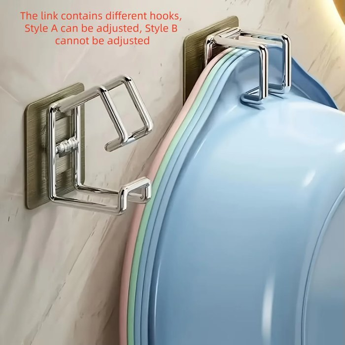

NICHT FREIGEGEBENER PRODUKTENTWURF
Keine eBay-Veröffentlichung. Fehlende Dokumente und Prüfpunkte bleiben offen. Versand und Gewinn sind nur Kalkulationswerte, keine Checkout-/Gewinnbestätigung.
AliExpress: 1005008684706431

Hinweis: 1. Der Link enthält 2 verschiedene Haken, Stil A kann angepasst werden, Stil B kann nicht angepasst werden. 2. Bitte kleben Sie die magnetische Saugfolie auf eine Oberfläche, die frei von Feuchtigkeit, Staub und flach ist, da sonst die Haftung des Trägerklebers beeinträchtigt wird. Beschreibung: Funktionen: Edelstahlkonstruktion: Unsere aus hochwertigem Edelstahl gefertigten Waschbeckenhaken sind rostbeständig und langlebig und gewährleisten eine dauerhafte Nutzung sowohl in Küchen als auch in Badezimmern. Kein Bohren erforderlich: Das Haushaltsklebedesign ermöglicht eine einfache Installation ohne Bohren, wodurch die Integrität Ihrer Wand erhalten bleibt und gleichzeitig ein starker Halt für alle Ihre Aufhängebedürfnisse geboten wird. Hochbelastbare Kapazität: Mit multifunktionalen Haken mit hoher Tragfähigkeit eignen sich diese robusten Waschbeckenhaken perfekt zum sicheren Aufhängen von Handtüchern, Töpfen und anderen Badutensilien. Wasserdicht und langlebig: Unsere wasserdichten Badezimmerhaken sind feuchtigkeitsbeständig, widerstehen Abnutzung und eignen sich daher ideal für feuchte Umgebungen, während sie ihr elegantes Aussehen behalten. Vielseitig einsetzbar: Diese vielseitigen Haken eignen sich perfekt zum Aufhängen von Waschbeckenhandtüchern oder zum Platzieren von Töpfen und eignen sich sowohl für die Küche als auch für das Badezimmer und maximieren so Ihren Platz und Ihre Organisation. Spezifikationen: Material: Edelstahl Größe: 8 * 8 cm Hinweise: Bitte erlauben Sie geringfügige Fehler aufgrund manueller Messung und unterschiedlicher Monitore. Paket beinhaltet: 1/2/4/6*Waschbecken-Haken
| Ursprung | CN (Herkunft) |
|---|---|
| Material | ABS |
| Merkmal | Andere |
| Anzahl der Haken | 1 |
| Material | Metal |
| Choice | yes |
| SKU | Quelloptionen | Bestand | Quellpreis EUR | Versandprognose EUR | Verkaufspreisprognose EUR |
|---|---|---|---|---|---|
| 12000051596214591 | {"Farbe": "B 2 Stück"} | 12 | 3.05 | 1.99 | 23.99 |
| 12000048199826712 | {"Farbe": "6 Stück"} | 9 | 13.49 | 1.99 | 41.99 |
| 12000048199826711 | {"Farbe": "4 Stück"} | 2 | 9.89 | 1.99 | 37.99 |
| 12000046231404661 | {"Farbe": "2 Stück"} | 11 | 5.49 | 1.99 | 26.99 |
| 12000051596214592 | {"Farbe": "B 4 Stück"} | 100 | 4.29 | 1.99 | 25.99 |
| 12000046231404660 | {"Farbe": "1 Stück"} | 5 | 3.49 | 1.99 | 24.99 |
Produktart